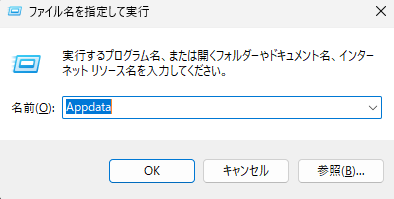

キャッシュクリアについて
キャッシュクリアとは？
キャッシュと呼ばれる一時データを削除することでFiveMの動作を少し軽くすることができます。
クラッシュが頻発する場合、多くはこのキャッシュが溜まっていることが原因の場合があります。
キャッシュをクリアすることでクラッシュ頻度を軽減できるようになります。
※全くしなくなるというわけではありませんので、ご注意ください。
キャッシュクリア手順
1. デスクトップ画面で「windowsキー」と「Rキー」を同時に押すと下の画像と同じ「ファイル名を指定して実行」ウィンドウが開かれます。

このテキストボックスに「Appdata」と入力します。
2. 「OK」を押すとAppdataのエクスプローラが開かれるので、
Local → FiveM → FiveM Application Data → data
の順でフォルダを開いていきます。
3. 開かれたフォルダ内にある
「cache」「server-cache」「server-cache-priv」
の3フォルダを削除して完了です。
キャッシュクリア後、最初に街に入るときは初回ロードが少し長くなります。
時間に余裕をもってクリアしてください。